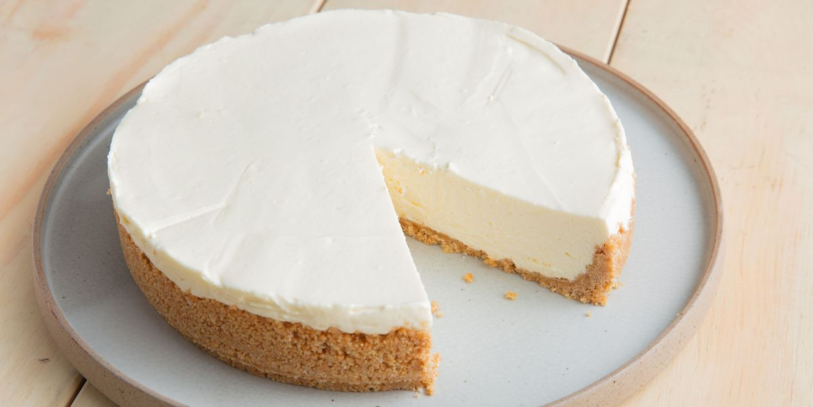

No-Bake cheesecake
Ingredients
- 280 g buiscuits
- 140 g melted butter
- 550 ml whipped cream
- 140 g caster sugar
- 560 g cream cheese
Directions
- Crush buiscuits with a rolling pin until very fine crumbs form
- Add butter, and stir until well combined
- Press the crumb mixture into a form; press flat. Chill crust in freezer at least 10 minutes
- Beat whipped cream and mix with powdered sugar and cream cheese
- Put the mixture on top of the cookie crumbs in the cake pan and smooth the top with a spatula or knife.
- Refrigerate the cake for at least 2 hours
